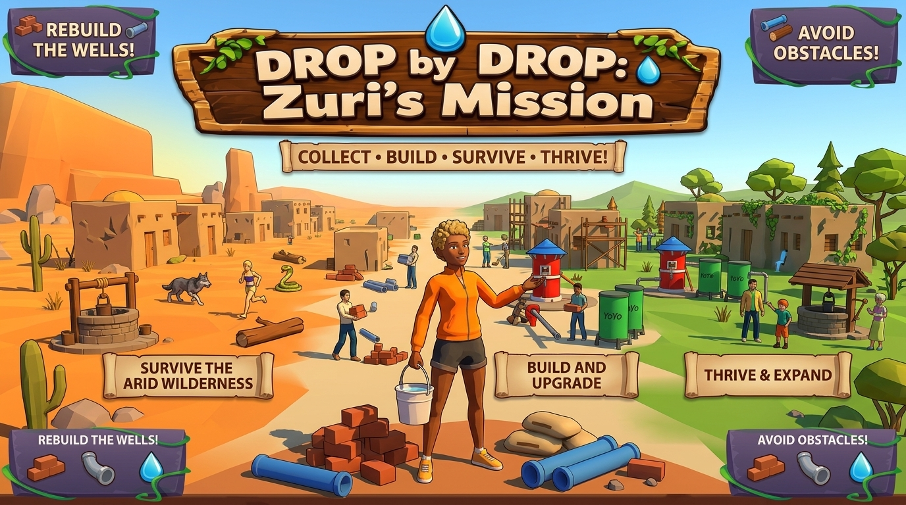
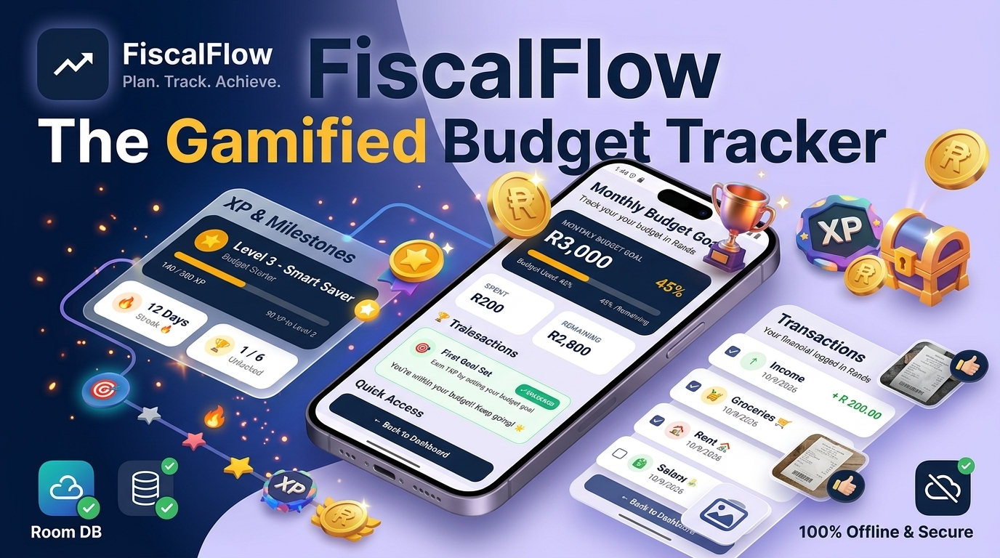
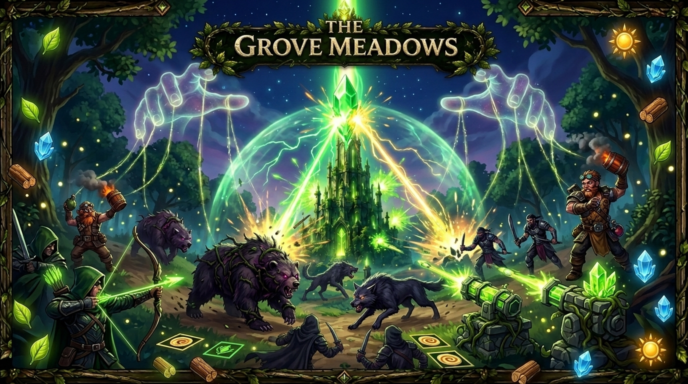

Design
I define the problem, identify the intended audience and plan how the experience should work. I consider the purpose, user needs and the overall direction before moving into implementation.
GET TO KNOW ME
I'm Belinda Mtabane, a Game Design and Game Development student who enjoys combining creativity, technology and problem-solving to build experiences that people can interact with, learn from and remember.
From designing game mechanics and building levels to integrating systems, developing interfaces and polishing the final experience, I enjoy seeing an idea grow into something practical and meaningful.
Creative thinking. Practical building. Continuous growth.
MY STORY
My interest in development comes from the opportunity to turn imagination into something people can use, explore and experience. I enjoy understanding how things work, breaking large challenges into smaller tasks and finding ways to bring creative ideas to life.
Studying Game Design and Game Development has allowed me to explore programming, gameplay systems, computer graphics, user interfaces, mathematics and interactive design. These areas help me approach projects from both a technical and creative perspective.
I am still learning and developing my skills, and I see that as an important part of being a developer. When something does not work, I investigate the problem, test alternatives and use the experience to improve my understanding.
I want my work to be more than functional. I want to create experiences that are accessible, engaging and thoughtful, whether that means helping someone learn, making a game more enjoyable or simplifying a practical problem through technology.
MY APPROACH
I approach development as a process of designing, experimenting, building, testing and improving.
I define the problem, identify the intended audience and plan how the experience should work. I consider the purpose, user needs and the overall direction before moving into implementation.
I explore ideas and possible solutions, experiment with different approaches and look for opportunities to make a project more useful, engaging or memorable.
I turn plans into working features, including gameplay mechanics, levels, interfaces, interactions and systems that support the overall experience.
I work on bringing individual features together so that systems, assets, interfaces and interactions function as one coherent project.
I look for bugs, confusing interactions and areas that can be improved. Testing and refinement help me make the experience clearer, more reliable and more enjoyable.
I reflect on what worked, learn from what did not and use feedback to strengthen my technical skills, creativity and approach to future projects.
PROBLEM-SOLVING
I am interested in how games and applications can respond to real needs. A project can entertain, support learning, encourage better habits or make complicated information easier to understand.
I aim to combine practical problem-solving with engaging design. This means thinking about what users need, how they will interact with a product and how the finished experience can communicate its purpose clearly.
LEADERSHIP & COLLABORATION
Working on team projects has helped me understand that successful development requires more than individual technical ability. Communication, planning, coordination and consistent progress are all important.
As a team lead and project manager on Fiscal Flow and Drop by Drop: Flow of Hope, I have taken responsibility for helping coordinate project work, keeping the team focused on its goals and supporting progress across different areas of development.
I value understanding how each contribution fits into the bigger picture. I aim to communicate clearly, approach challenges constructively and work with others to resolve issues and integrate different parts of a project.
These experiences continue to develop my ability to balance creative ideas with realistic tasks, timelines and technical requirements.
WHAT I'M BUILDING
Each project gives me an opportunity to explore a different challenge, develop new skills and improve how I design and build interactive experiences.

UNITY · C# · EDUCATIONAL GAME
An educational runner inspired by UN Sustainable Development Goal 6: Clean Water and Sanitation. The game explores water scarcity through resource collection, hazards and community restoration objectives.
My responsibilities include team leadership and project coordination, alongside work on runner systems, spawning, pickups, hazards, foundational interface elements and tutorial guidance.
Explore the project →
KOTLIN · ANDROID · UI DESIGN
A financial application concept focused on making money management more approachable through accessible screens and organised financial information.
As team lead and project manager, I contributed to coordinating the project and developing dashboard, monthly budget, gamification, profile and transaction interface elements.
Explore the project →
UNREAL ENGINE · C++ · GAMEPLAY
A fantasy forest tower defence project focused on defending a magical environment through strategic placement, enemy behaviour and defensive gameplay systems.
My development work has included enemy variants, defender types, interface elements and aspects of spawning and behaviour, while exploring procedural generation.
Explore the project →MY TOOLKIT
C#, C++, Kotlin, object-oriented programming, debugging and problem-solving.
Unity, Unreal Engine, Blueprints, gameplay mechanics, level design and interactive systems.
Blender, computer graphics, UI/UX, visual communication and interactive design.
AI-assisted development, prompt engineering, generative AI workflows and AI video production.
Mathematics, physics, software development, testing and version control with Git.
Teamwork, project coordination, communication, teaching, adaptability and creative thinking.
EDUCATION
2024–2027
IIE Vega School
My studies explore programming, game design, software development, computer graphics, physics, mathematics, artificial intelligence integration and interactive user experiences.
I apply these concepts through practical projects, where I can experiment, solve technical problems and develop my understanding of how creative ideas become working applications and games.
EXPERIENCE
CURRENT
Kodland
Delivering live online coding lessons to international students. Supporting programming fundamentals such as variables, algorithms, loops, functions and debugging through accessible explanations and practical projects.
Helping learners develop computational thinking, build confidence and make progress through project-based learning.
2025
Vega College / Emeris
Supporting students with Pure Mathematics, Physics and Computer Graphics by explaining concepts, helping them work through problems and reinforcing their academic understanding.
SELF-EMPLOYED
Providing private mathematics tutoring, breaking down challenging topics into understandable steps and helping learners strengthen their confidence and analytical thinking.
CURRENT
Exploring AI-assisted content production for educational and entertainment purposes using tools such as Google Flow, Claude and Google Gemini to develop creative production workflows.
CURRENT
Developing responsive website layouts and user-friendly interfaces using HTML and CSS, while learning to use AI-assisted workflows responsibly and reviewing the quality of the resulting code.
WHAT'S NEXT
I want to continue strengthening my programming ability, expand my understanding of game and application development, and become more confident in building complete, polished experiences.
I am especially interested in interactive systems, meaningful game design, AI-assisted workflows and technology that makes learning and everyday tasks more engaging.
Every project is an opportunity to learn something new, contribute to a team and turn another idea into something real.
LET'S CONNECT
I'm always interested in learning, collaborating and exploring new creative technology projects.